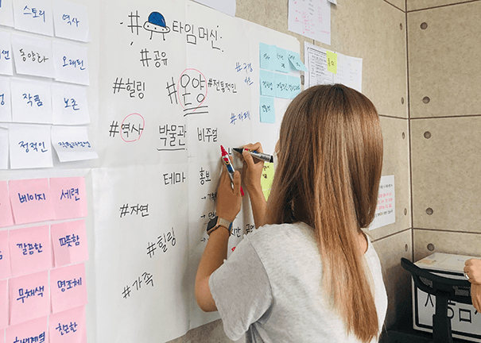
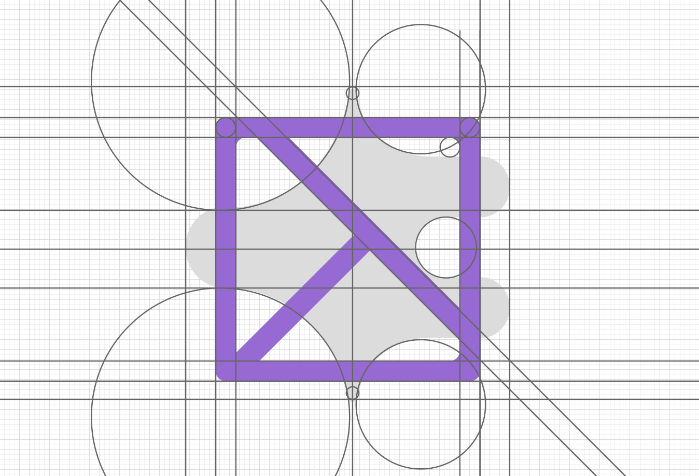
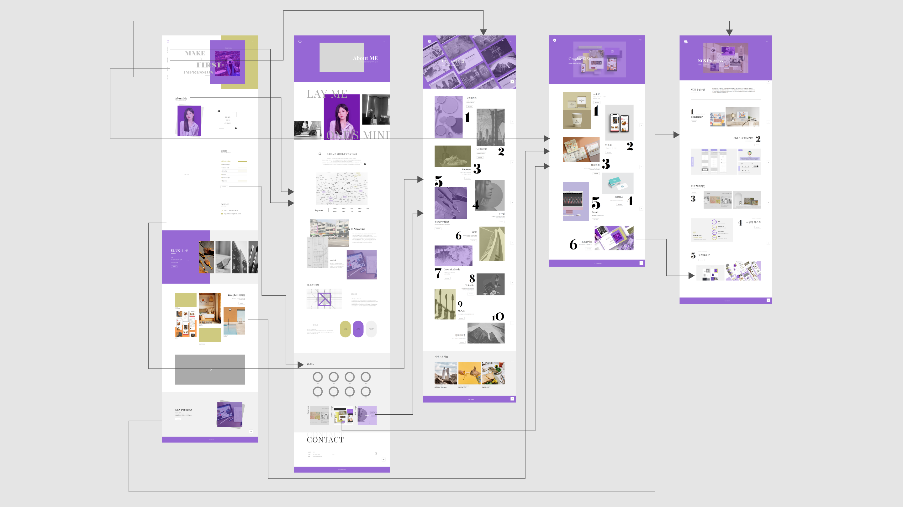

Portfolio
포트폴리오 UI/UX 디자인 및 퍼블리싱 과정
포트폴리오 UI/UX 디자인 및 퍼블리싱 과정
UI/UX 디자인
October 2021
나를 나타내고 능력치를 보여줄 수 있는 포트폴리오를 웹사이트 형태로 제작했습니다.
코딩 페이지에서는 그 외 퍼블리싱 작업물을 볼 수 있습니다.

'나'를 나타내기 위해 먼저 나라는 사람을 알고 나에 대한 키워드를 찾기 위해
디자인 프로세스
중 하나인 마인드맵을 그려보았습니다.
보라색으로 표시한 키워드는 홈페이지에 요소로 추가해 '나'를 보여주도록 했고,
올리브색으로 표시한 추상적인 키워드는
웹페이지의 스타일에 담아내고자 했습니다.
마인드맵을 통해 '해석하다', '첫인상', '차이', '새기다', '취향' 다섯가지의 키워드를
도출한 이유는 대상의 가치를 담아내 누군가에게 첫인상을 깊게
새기겠다는
저의 가치관을 잘 드러낸다고 생각했기 때문입니다.


그리드 시스템
'나'를 새겨 누군가의 기억에 남겠다는 메세지를 표현하기 위해
종이에 스며들어 지워지지
않는 '잉크'라는 개체를 추상적인 도형으로 형상화했습니다.
디자인할 때
생기는 어느정도의 보편적인 구조와 일반적인 취향이 있지만 거기에 맞추되 틀에 박히지는 않겠다는 의미로 사각형 틀 안에 기울어진 사각형이 보이도록 했습니다.
기울어진 사각형은 저의 이니셜인 'H'의 일부분처럼 보이도록 했습니다.
컬러 시스템
테마 키워드로 구상한 웹사이트 스타일은
보색을 메인컬러로 사용해 감각적이고
눈길을
사로잡도록 했으며 수직, 수평과 사각형을 주로 사용해
모던하고 깔끔한 느낌을
주도록 했습니다.
테마 키워드로 구성한 웹사이트 컨셉은 "인상을 새기는 것" 입니다.
많은 디자인 중 깊은 인상을 새기고 '나'를 한눈에 보여줄 수 있는 구조와 컬러를 고민하고 편리함과 사용성 또한 함께 생각하며 디자인했습니다.
사용성을 고려한 각 페이지간의 플로우차트 설계

Adobe XD를 활용한 프로토타입 완성

30여명에게 사이트 프로토타입을 사용하게 하고 사용성과 디자인에 대한 질문에 답하게 했습니다.
이후 수치를 통계로 정리한 결과 컨트롤과 에러방지 측면에 문제점이 있다고 보여져
UI를 명확히 하기 위해 아이콘을 활용하고 TOP 버튼과 이전 버튼 등을 추가하여 원하는 항목으로의 이동을 편리하게 개선했습니다.
사이트 퍼블리싱 후에는 자체 체크리스트를 만들어 수정할 항목을 정리하고 일정 계획을 세워 작업을 완료했습니다.